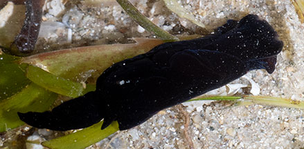
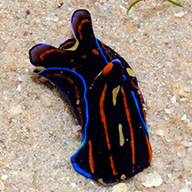
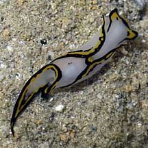

Tailed-slugs
Family Aglajidae
updated
May 2020
Where
seen? These slugs are sometimes seen on some of our shores. They appear to be highly seasonal. Many kinds we see only once and never again.
Features: Long, cylindrical body with a pair
of 'wings' (called parapodia) which fold over the centre of the body
as well as a pair of 'tails, one longer than the other. They have
tiny shells which are internal.
What do they eat? Some tailed slugs are carnivores and eat their prey whole, crushing
them with hard calcareous plates in the gizzard. Their prey include
other slugs, flatworms, acoel flatworms and polychaete worms.
Some have well developed structures to track down their prey by following
the prey's mucous trail. Others are herbivores. |

A pair of tails, one longer than the other.
Cyrene Reef, Feb 12
|
|
| Some Tailed-slugs on Singapore shores |
| More Tailed-slugs on Singapore shores |

Philinopsis speciosa
Cyrene Reef, Feb 16
Photo shared by Loh Kok Sheng on his blog
Identified by Toh Chay Hoon on facebook. |

Chelidonura pallida
Pulau Semakau, Nov 07 |
|
Family Aglajidae recorded for Singapore
from
Tan Siong Kiat and Henrietta P. M. Woo, 2010 Preliminary Checklist
of The Molluscs of Singapore.
^from WORMS
+Other additions (Singapore Biodiversity Records, etc)
| |
Family
Aglajidae (tailed-slugs) |
|
References
- Toh Chay Hoon. 27 May 2016. New Singapore record of sea slug Odontoglaja mosaica. Singapore Biodiversity Records 2016: 66
- Gina Tan & Toh Chay Hoon. 12 December 2014. New record of sea slug Chelidonura amoena in Singapore. Singapore Biodiversity Records 2014: 324-325.
- Toh Chay Hoon. October 2014. New Singapore record of sea slug genus Noalda from Pulau Hantu, Noalda sp. Singapore Biodiversity Records 2014: 275.
- Toh Chay Hoon. 21 March 2014. New record of nudibranch Odontoglaja guamensis in Singapore. Singapore Biodiversity Records 2014: 74
- Tan Siong
Kiat and Henrietta P. M. Woo, 2010 Preliminary
Checklist of The Molluscs of Singapore (pdf), Raffles
Museum of Biodiversity Research, National University of Singapore.
- Debelius,
Helmut, 2001. Nudibranchs
and Sea Snails: Indo-Pacific Field Guide IKAN-Unterwasserachiv, Frankfurt. 321 pp.
- Wells, Fred
E. and Clayton W. Bryce. 2000. Slugs
of Western Australia: A guide to the species from the Indian to
West Pacific Oceans.
Western Australian Museum. 184 pp.
- Wee Y.C.
and Peter K. L. Ng. 1994. A First Look at Biodiversity in Singapore.
National Council on the Environment. 163pp.
- Coleman,
Neville. 2008. Nudibranchs
Encyclopedia - Catalogue of Asia/Indo Pacific sea slugs.
Neville Coleman's World of Water, Australia. 415pp.
- Gosliner,
Terrence M., David W. Behrens and Gary C. Williams. 1996. Coral
Reef Animals of the Indo-Pacific: Animal life from Africa to Hawaii
exclusive of the vertebrates Sea Challengers. 314pp.
- Kuiter, Rudie
H and Helmut Debelius. 2009. World
Atlas of Marine Fauna. IKAN-Unterwasserachiv. 723pp.
- Coleman,
Neville. 2008. Nudibranchs
Encyclopedia - Catalogue of Asia/Indo Pacific sea slugs.
Neville Coleman's World of Water, Australia. 415pp.
|
|
|